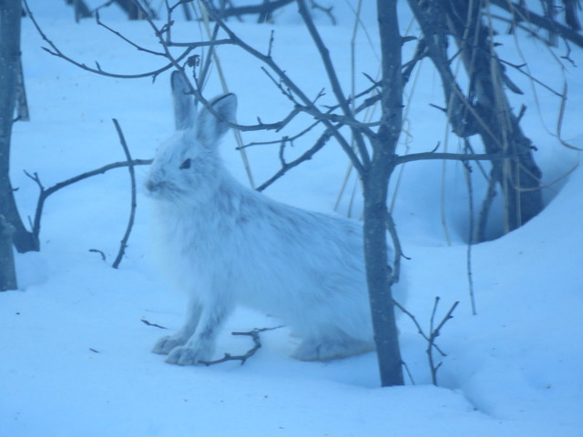
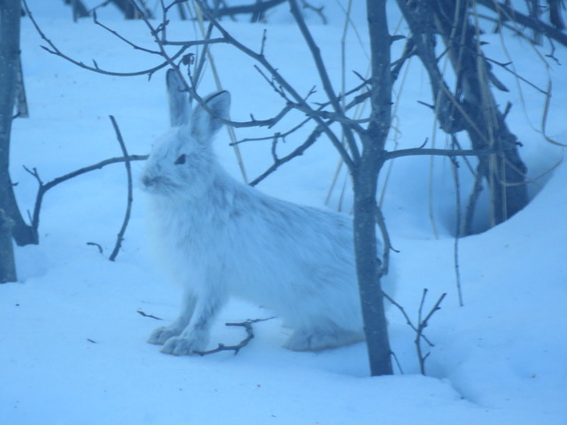

My First paragraph.
My 2nd line in my first paragraph
My Second paragraph is dark green
This is the 2nd line of the 2nd paragraph
This is my third paragraph, its red
Hover the mouse over the paragraph


 


The number of lines in a paragraph depends on the size of the browser window. If you resize the browser window, the number of lines in this paragraph will change.
My Bonnie lies over the ocean.
My 'Bonnie' lies over the sea.
My Bonnie lies over the ocean.
Oh, bring back my Bonnie to me.
My Bonnie lies over the ocean.
My Bonnie lies over the sea.
My Bonnie lies over the ocean.
Oh, bring back my Bonnie to me.
by:Uknown
This is the start of the formatting section!. Strong is used.
This Text is bold red
This text is Green and italic
This text is Green and emphasized
This is small Text <@:D mark refers to a highlight ,you can change the color of the highlight
My favorite color is blue___Actually is Yellow!
This issubscript and superscript
Log10=2
102=100
Here is a quote from WWf's website:
For 50 years, WWF has been protecting the future of nature. The world's leading conservation organization, WWF works in 100 countries and is supported by 1.2 million members in the United States and close to 5 million globally.
Browsers usually insert quotation marks around the q elemnet
"WWF's goal is to:" (notice how the quotes look different)Build a future where people live in harmony with nature
The WHO was founded in 1948. The idea is to save space, but still have the full name for search engines ect..there is also a dotted underline
Marking up abbreviations can give useful infomration to browsers,translation systemsand search-engines.
The HTML address element defines contact information (author/owner) of a document or article.
Written by the Blue Bomber.
Aqua Mooseby Michelle K. Taken June 2020